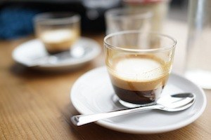
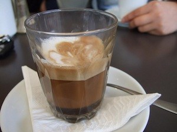
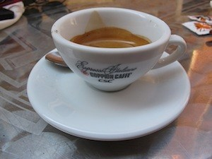
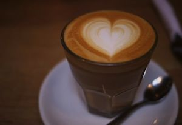
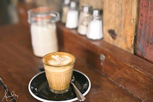
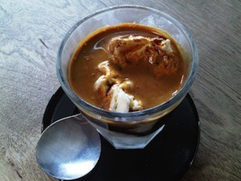

Espresso is coffee of Italian origin, brewed by expressing or forcing a small amount
of nearly boiling water under pressure through finely ground coffee beans.
Double Espresso
A double espresso (aka “Doppio”) is just that,
two espresso shots in one cup.

Short Macchiato
A short macchiato is similar to an espresso but with a
dollop of steamed milk and foam to mellow the harsh taste of an espresso.
You will find that baristas in different countries make short macchiatos differently.

Long Macchiato
A long macchiato is the same as a short macchiato but with a double shot of espresso.
A dollop of steamed milk and foam placed on top of the espresso

Ristretto
A ristretto is an espresso shot that is extracted with
the same amount of coffee but half the amount of
water. The end result is a more concentrated and
darker espresso extraction.
Long Black (Americano)
A long black (aka “americano”) is hot water with an espresso shot extracted on top of the hot
water.

Cafe Latte
A café latte, or “latte” for short, is an espresso based drink
with steamed milk and micro-foam added to the coffee.
This coffee is much sweeter compared to an
espresso due to the steamed milk
Cappuccino
A cappuccino is similar to a latte. However the key
difference between a latte and cappuccino is that
a cappuccino has more foam and chocolate placed on
top of the drink.
Flat White
A at white is a coffee you’ll primarily nd in Australia
and New Zealand. It is made the same as a
cappuccino expect it does not have any foam or
chocolate on top

Piccolo Latte
A piccolo latte is a café latte made in an espresso cup.
This means it has a very strong but mellowed down
espresso taste thanks to the steamed milk and micro
foam within it.
Mocha
A mocha is a mix between a cappuccino and a hot chocolate. It is made by putting mixing
chocolate powder with an espresso shot and then adding steamed milk and micro-foam into
the beverage

Affogato
An affogato is a simple
dessert coffee that is
treat during summer and after dinner.